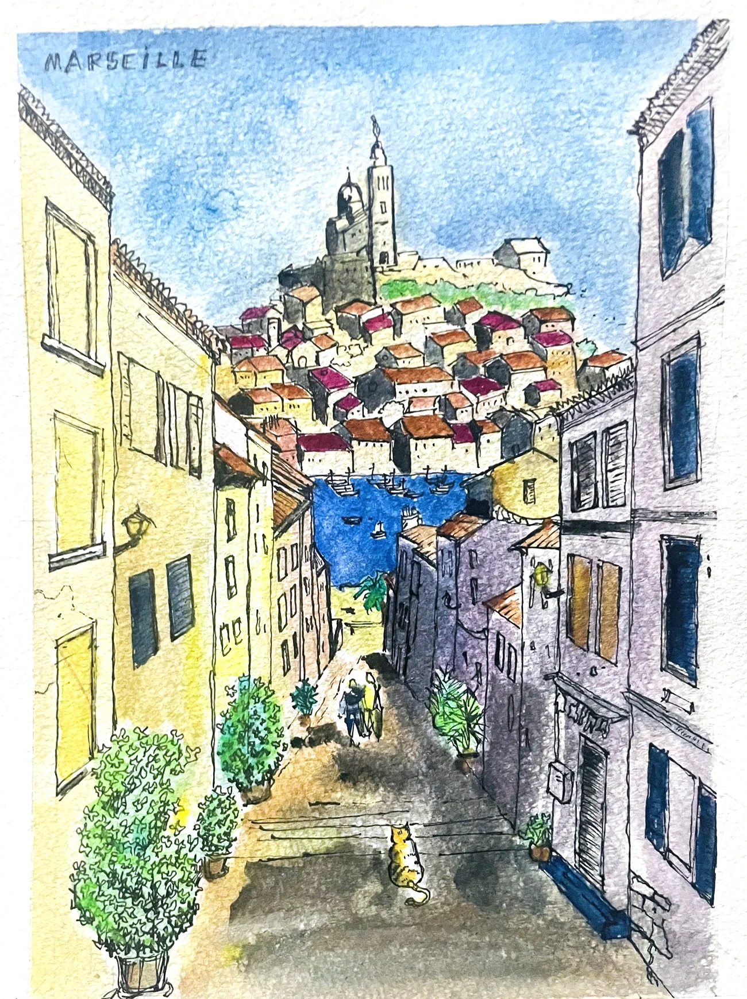

About Chandira Imanjith
I’m Chandira Imanjith, a first-year architecture student at the City School of Architecture in Colombo. I draw to look more closely: at how a tower meets its street corner, how light cuts through a dark interior, how a city stacks itself up a hillside.


This site gathers a first set of sketches and studies in ink and watercolor: a glass tower in perspective, a black-and-white study of light and dark, and street scenes of Málaga and Marseille.
I’m at the beginning of my studies, and this map will keep growing with them. If something here catches your eye, I’d be glad to hear from you.